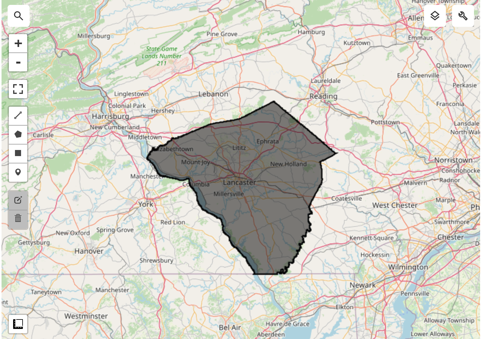
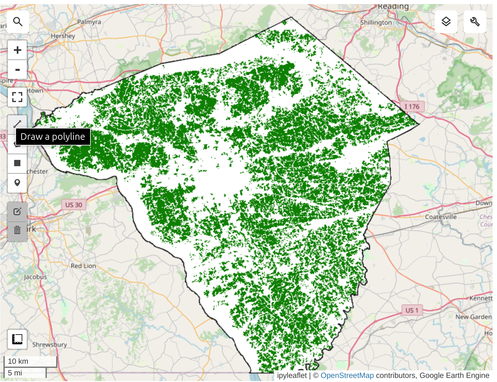
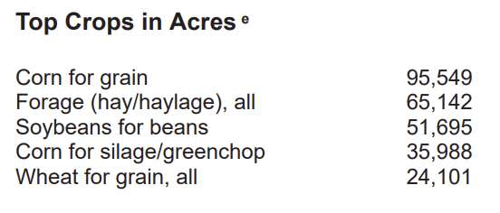
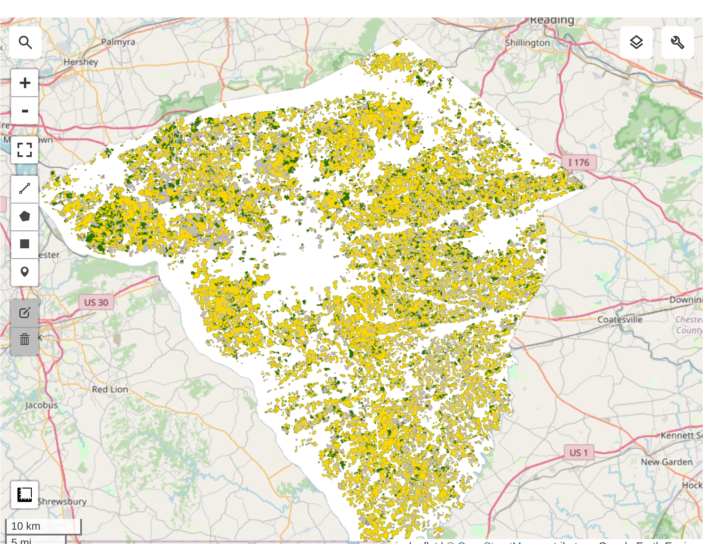

Show Code
import ee
import geemapAuthor: Zhanchao Yang
Weitzman School of Design, University of Pennsylvania
This tutorial is adapted from the official Google Earth Engine embedding tutorial: https://developers.google.com/earth-engine/tutorials/community/satellite-embedding-02-unsupervised-classification
In this tutorial, we will take an unsupervised classification approach to ise the Satellite Embedding Dataset to classify land cover types in a study area. We will use the K-Means clustering algorithm to group similar land cover types based on their spectral characteristics.
We used the leafmap package to quickly visualize random bands from the Satellite Embedding Dataset across Pennsylvania on an interactive map. See the note book on the GitHub repo for details thanks to amazing tutorial by Dr. Qiusheng Wu.
Combination one(random 3 draw from 64 bands)

Combination two(random 3 draw from 64 bands)

import ee
import geemapee.Authenticate()
ee.Initialize(project="ee-zhanchaoyang")Lancaster County in Pennsylvania is one of the most productive agricultural counties in the United States. It is known for its fertile soil and favorable climate, which support a wide variety of crops. The county is particularly famous for its corn and soybean production, which are the two main crops grown in the area. In addition to these staple crops, Lancaster County also produces wheat, barley, oats, and various fruits and vegetables. The county’s agricultural landscape is characterized by a mix of small family farms and larger commercial operations, contributing to its reputation as a leading agricultural region.
counties = ee.FeatureCollection("TIGER/2018/Counties")lancaster = counties.filter(ee.Filter.eq("GEOID", "42071")).geometry()m = geemap.Map(center=[40.04, -76.30], zoom=9)
m.addLayer(lancaster, {}, "Lancaster County")
m
embedding = ee.ImageCollection("GOOGLE/SATELLITE_EMBEDDING/V1/ANNUAL")year = 2022
startdate = ee.Date.fromYMD(year, 1, 1)
enddate = ee.Date.fromYMD(year + 1, 1, 1)study_embeddings = embedding.filter(ee.Filter.date(startdate, enddate)).filter(
ee.Filter.bounds(lancaster)
);embeddingsImage = study_embeddings.mosaic()For our modeling, we need to exclude non-cropland areas. There are many global and regional datasets that can be used to create a crop mask. ESA WorldCover or GFSAD Global Cropland Extent Product are good choices for global cropland datasets. A more recent addition is the ESA WorldCereal Active Cropland product which has seasonal mapping of active croplands. Since our region is in the US, we can use a more accurate regional dataset USDA NASS Cropland Data Layers (CDL) to obtain a crop mask.
cdl = (
ee.ImageCollection("USDA/NASS/CDL")
.filter(ee.Filter.date("2022-01-01", "2023-01-01"))
.first()
)
cropland = cdl.select("cropland")
cropland_mask = cdl.select("cultivated").eq(2).rename("cropmask")map = geemap.Map(center=[40.04, -76.30], zoom=9)
m.addLayer(
cropland_mask.clip(lancaster),
{"min": 0, "max": 1, "palette": ["white", "green"]},
"Cropland Mask",
)
m
We apply the cropland mask to the embedding mosaic. We are now left with all the pixels representing cultivated cropland in the county.
cluster_image = embeddingsImage.updateMask(cropland_mask).addBands(cropland_mask)We need to take the Satellite Embedding image and obtain random samples to train a clustering model. Since our region of interest contains many masked pixels, a simple random sampling may result in samples with null values. To ensure we can extract the desired number of non-null samples, we use stratified sampling to obtain the desired number of samples in unmasked areas.
training = cluster_image.stratifiedSample(
numPoints=1000,
classBand="cropmask",
region=lancaster,
scale=10,
tileScale=16,
seed=100,
dropNulls=True,
geometries=True,
)m.addLayer(training.style(**{"color": "red", "pointSize": 3}), {}, "Training Points")
m
We can now train a clusterer and group the 64D embedding vectors into a chosen number of distinct clusters. We can perform unsupervised clustering on the Satellite Embedding to obtain clusters of pixels that have similar temporal trajectories and patterns. Pixels with similar spectral and spatial characteristics along with similar phenology will be grouped in the same cluster.
The ee.Clusterer.wekaCascadeKMeans() allows us to specify a minimum and maximum number of clusters and find the optimal number of clusters based on the training data.
mincluster = 4
maxcluster = 5clusterer = ee.Clusterer.wekaCascadeKMeans(
minClusters=mincluster,
maxClusters=maxcluster,
).train(features=training, inputProperties=cluster_image.bandNames())
clustered = cluster_image.cluster(clusterer)vis = clustered.randomVisualizer().clip(lancaster)
m.addLayer(vis, {}, "Clustered Image")
marea_image = ee.Image.pixelArea().divide(4046.86).addBands(clustered)areas = area_image.reduceRegion(
reducer=ee.Reducer.sum().group(
groupField=1,
groupName="cluster",
),
geometry=lancaster,
scale=10,
maxPixels=1e10,
)print(areas.getInfo()){'groups': [{'cluster': 0, 'sum': 25515.64233156354}, {'cluster': 1, 'sum': 119071.52986344381}, {'cluster': 2, 'sum': 62110.8848333255}, {'cluster': 3, 'sum': 56379.182187226}]}cluster_areas = ee.List(areas.get("groups"))clusterAreas = ee.List(cluster_areas)def to_feature(item):
d = ee.Dictionary(item)
return ee.Feature(
None, {"cluster": d.getNumber("cluster").format(), "area": d.getNumber("sum")}
)
cluster_area_fc = ee.FeatureCollection(cluster_areas.map(to_feature))print(cluster_area_fc.limit(10).getInfo()){'type': 'FeatureCollection', 'columns': {'area': 'Float', 'cluster': 'String', 'system:index': 'String'}, 'features': [{'type': 'Feature', 'geometry': None, 'id': '0', 'properties': {'area': 25515.64233156354, 'cluster': '0'}}, {'type': 'Feature', 'geometry': None, 'id': '1', 'properties': {'area': 119071.52986344381, 'cluster': '1'}}, {'type': 'Feature', 'geometry': None, 'id': '2', 'properties': {'area': 62110.8848333255, 'cluster': '2'}}, {'type': 'Feature', 'geometry': None, 'id': '3', 'properties': {'area': 56379.182187226, 'cluster': '3'}}]}Prediction results (in acres): - Cluster 1: 25515.6423 - Cluster 2: 119071.5298 - Cluster 3: 62110.8848 - Cluster 4: 56379.1821
Based on the USDA report, the main crops in Lancaster County are: - Corn for grain 95,549 + 35,988 = 131537; Prediction=119071 - Forage (hay/haylage), all 65,142 (others) - Soybeans for beans 51,695 - Wheat for grain, all 24,101
We try to group the crops into 3 clusters: Corn, Soybean, and Other crops for simplicity. 
cdl = (
ee.ImageCollection("USDA/NASS/CDL")
.filter(ee.Filter.date("2022-01-01", "2023-01-01"))
.first()
)
cropland = cdl.select("cropland")
cropmap = cropland.updateMask(cropland_mask).rename("crops")cropclasses = ee.List.sequence(0, 254)targetclasses = ee.List.repeat(0, 255).set(1, 1).set(5, 2)cropmapreclass = cropmap.remap(cropclasses, targetclasses).rename("crops")crop_vis = {"min": 0, "max": 2, "palette": ["#bdbdbd", "#ffd400", "#267300"]}
m.addLayer(cropmapreclass.clip(lancaster), crop_vis, "Reclassified Crop Map")
mValidation Results from USDA-NASS CDL 2022:

Unsupervised classification results: from the Kmeans clustering on Satellite Embedding Dataset

Highly suggest to run the code cells in the notebook to explore the interactive map to compare the classification results with the USDA-NASS CDL 2022 data.
Thank you so much to Ujaval Gandhi and Dr. Qiusheng Wu for their amazing tutorials and open-source codes!